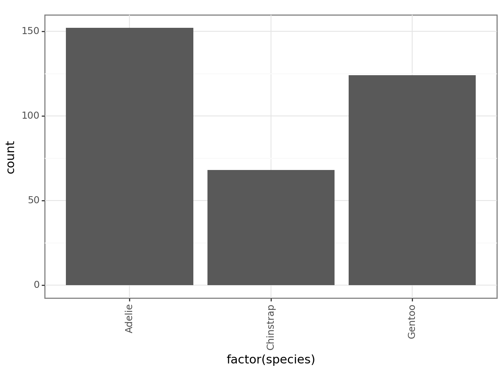
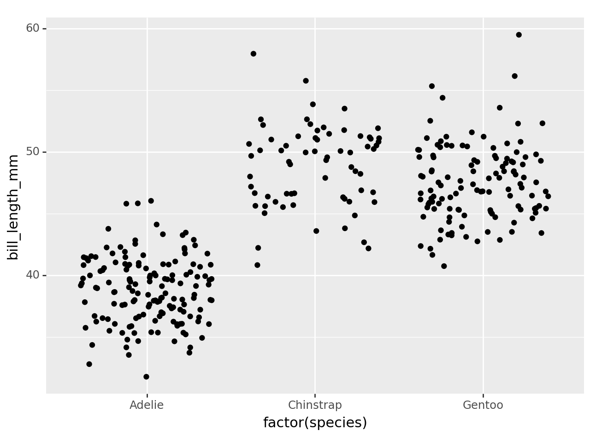
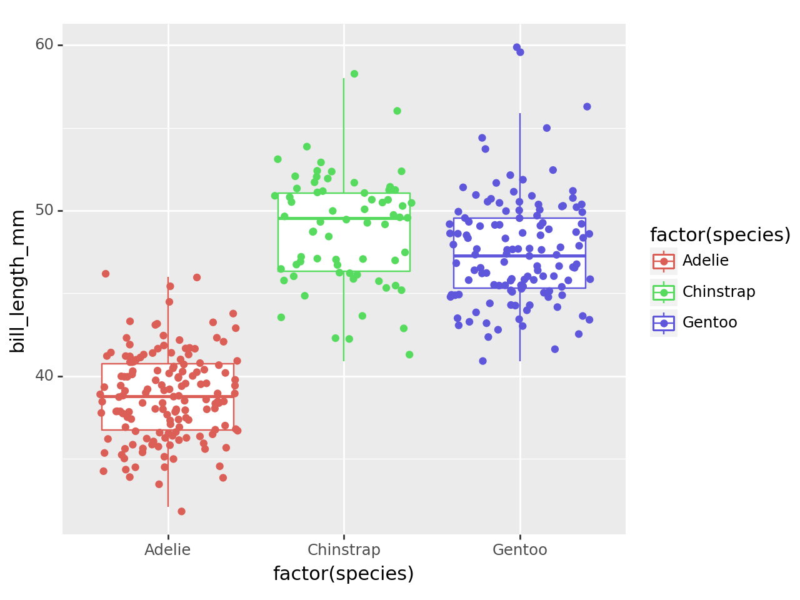
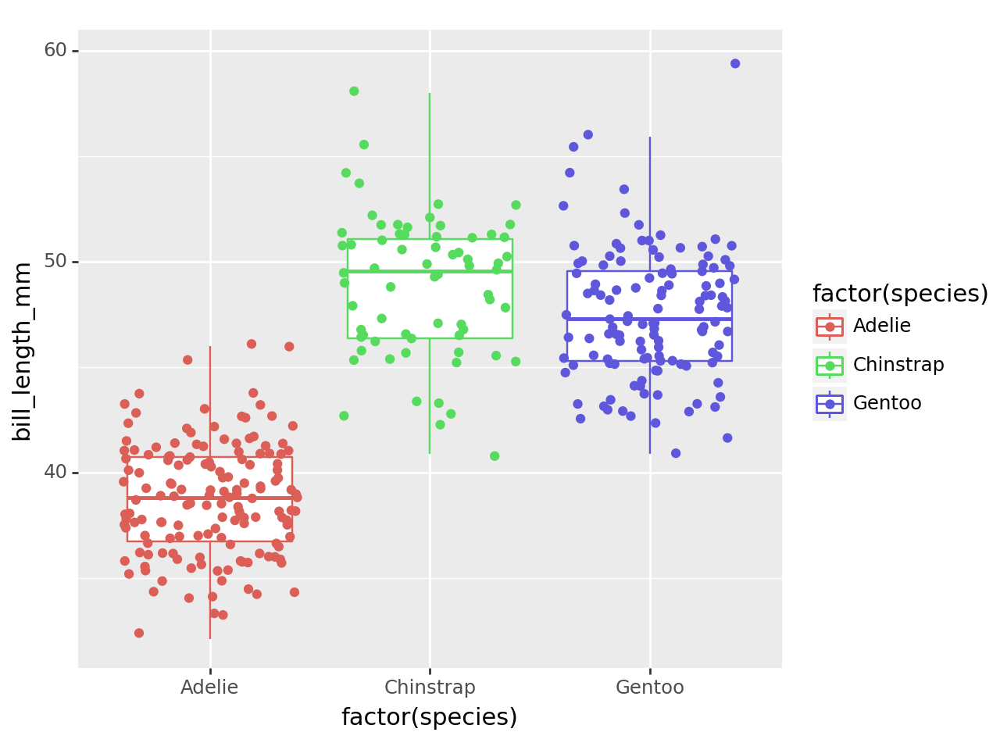
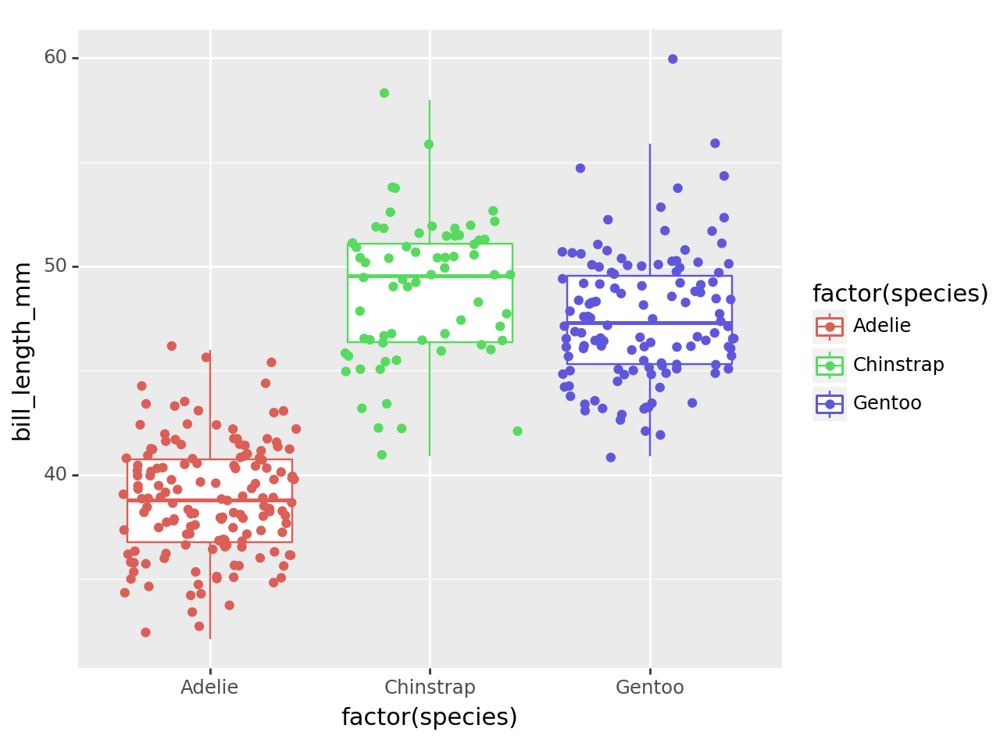
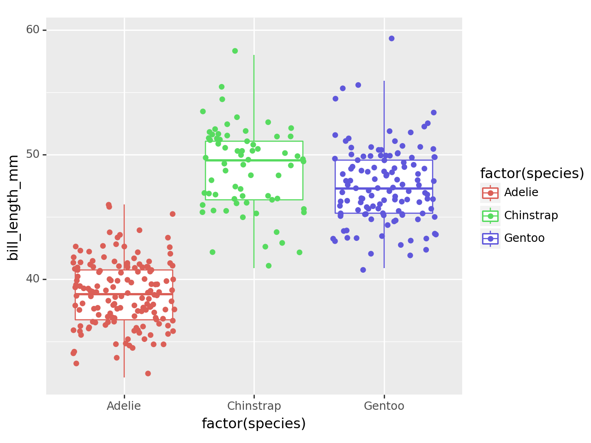

import pandas as pd
import plotnine as p9
from plotnine import ggplot, geom_point, aes, stat_smooth, facet_wrap, labs
from palmerpenguins import load_penguins1 Set up
Install Python on your machine.
Install Quarto
Go to cmd and type
py --versionpy -m pip install pandas plotly statsmodelspy -m pip install palmerpenguinspy -m pip install plotnine
Note: The reason for typing
py -minstead of justpipinstall is to avoid issues where you might have multiple versions of Python installed, and pip could be tied to the wrong version. By runningpy -m pip, you’re explicitly telling the Python launcher to use the right Python interpreter and its associated pip.
2 Loading packages
3 Data
penguins = load_penguins()
penguins.head()| species | island | bill_length_mm | bill_depth_mm | flipper_length_mm | body_mass_g | sex | year | |
|---|---|---|---|---|---|---|---|---|
| 0 | Adelie | Torgersen | 39.1 | 18.7 | 181.0 | 3750.0 | male | 2007 |
| 1 | Adelie | Torgersen | 39.5 | 17.4 | 186.0 | 3800.0 | female | 2007 |
| 2 | Adelie | Torgersen | 40.3 | 18.0 | 195.0 | 3250.0 | female | 2007 |
| 3 | Adelie | Torgersen | NaN | NaN | NaN | NaN | NaN | 2007 |
| 4 | Adelie | Torgersen | 36.7 | 19.3 | 193.0 | 3450.0 | female | 2007 |
4 Data Visualisation with plotnine
4.1 Step 1: Take data and obtain a canvas for plotting
ggplot(penguins)4.2 Step 2: Defining Aesthetics
ggplot(penguins, aes("bill_length_mm", "bill_depth_mm", color="factor(species)"))4.3 Step 3: Add Gemetries
ggplot(penguins, aes("bill_length_mm", "bill_depth_mm", color="factor(species)")) + geom_point()C:\Users\DELL\AppData\Local\Programs\Python\Python312\Lib\site-packages\plotnine\layer.py:364: PlotnineWarning: geom_point : Removed 2 rows containing missing values.4.4 Step 4: Create the plot with customized axis labels
ggplot(penguins, aes("bill_length_mm", "bill_depth_mm", color="factor(species)")) + geom_point() + labs(x="Bill Length (mm)", y="Bill Depth (mm)")C:\Users\DELL\AppData\Local\Programs\Python\Python312\Lib\site-packages\plotnine\layer.py:364: PlotnineWarning: geom_point : Removed 2 rows containing missing values.5 Change themes
5.1 Without customized themes
p9.ggplot(data=penguins,
mapping=p9.aes(x='factor(species)')) + p9.geom_bar() 5.2 With customized themes
p9.ggplot(data=penguins,
mapping=p9.aes(x='factor(species)')) + p9.geom_bar() + p9.theme_bw() + p9.theme(axis_text_x = p9.element_text(angle=90))
6 Faceting
6.1 Without faceting
ggplot(penguins, aes("bill_length_mm", "bill_depth_mm", color="factor(species)")) + geom_point() + labs(x="Bill Length (mm)", y="Bill Depth (mm)") C:\Users\DELL\AppData\Local\Programs\Python\Python312\Lib\site-packages\plotnine\layer.py:364: PlotnineWarning: geom_point : Removed 2 rows containing missing values.
6.2 With faceting
ggplot(penguins, aes("bill_length_mm", "bill_depth_mm", color="factor(species)")) + geom_point() + labs(x="Bill Length (mm)", y="Bill Depth (mm)") + facet_wrap("species")C:\Users\DELL\AppData\Local\Programs\Python\Python312\Lib\site-packages\plotnine\layer.py:364: PlotnineWarning: geom_point : Removed 2 rows containing missing values.7 Other geoms
7.1 geom_boxplot
p9.ggplot(data=penguins,
mapping=p9.aes(x='factor(species)', y='bill_length_mm')) + p9.geom_boxplot()C:\Users\DELL\AppData\Local\Programs\Python\Python312\Lib\site-packages\plotnine\layer.py:284: PlotnineWarning: stat_boxplot : Removed 2 rows containing non-finite values.7.2 geom_jitter
p9.ggplot(data=penguins,
mapping=p9.aes(x='factor(species)', y='bill_length_mm')) + p9.geom_jitter()C:\Users\DELL\AppData\Local\Programs\Python\Python312\Lib\site-packages\plotnine\layer.py:364: PlotnineWarning: geom_jitter : Removed 2 rows containing missing values.
7.3 geom_boxplot + geom_jitter
p9.ggplot(data=penguins,
mapping=p9.aes(x='factor(species)', y='bill_length_mm', color='factor(species)')) + p9.geom_boxplot()+ p9.geom_jitter()C:\Users\DELL\AppData\Local\Programs\Python\Python312\Lib\site-packages\plotnine\layer.py:284: PlotnineWarning: stat_boxplot : Removed 2 rows containing non-finite values.
C:\Users\DELL\AppData\Local\Programs\Python\Python312\Lib\site-packages\plotnine\layer.py:364: PlotnineWarning: geom_jitter : Removed 2 rows containing missing values.
7.4 To remove outliers from the boxplot in your ggplot code
p9.ggplot(data=penguins,
mapping=p9.aes(x='factor(species)', y='bill_length_mm', color='factor(species)')) + p9.geom_boxplot(outlier_shape = "None")+ p9.geom_jitter()C:\Users\DELL\AppData\Local\Programs\Python\Python312\Lib\site-packages\plotnine\layer.py:284: PlotnineWarning: stat_boxplot : Removed 2 rows containing non-finite values.
C:\Users\DELL\AppData\Local\Programs\Python\Python312\Lib\site-packages\plotnine\layer.py:364: PlotnineWarning: geom_jitter : Removed 2 rows containing missing values.8 Working with chunk options
8.1 echo: false
C:\Users\DELL\AppData\Local\Programs\Python\Python312\Lib\site-packages\plotnine\layer.py:284: PlotnineWarning: stat_boxplot : Removed 2 rows containing non-finite values.
C:\Users\DELL\AppData\Local\Programs\Python\Python312\Lib\site-packages\plotnine\layer.py:364: PlotnineWarning: geom_jitter : Removed 2 rows containing missing values.
8.2 fig-cap
C:\Users\DELL\AppData\Local\Programs\Python\Python312\Lib\site-packages\plotnine\layer.py:284: PlotnineWarning: stat_boxplot : Removed 2 rows containing non-finite values.
C:\Users\DELL\AppData\Local\Programs\Python\Python312\Lib\site-packages\plotnine\layer.py:364: PlotnineWarning: geom_jitter : Removed 2 rows containing missing values.
8.3 fig width
C:\Users\DELL\AppData\Local\Programs\Python\Python312\Lib\site-packages\plotnine\layer.py:284: PlotnineWarning: stat_boxplot : Removed 2 rows containing non-finite values.
C:\Users\DELL\AppData\Local\Programs\Python\Python312\Lib\site-packages\plotnine\layer.py:364: PlotnineWarning: geom_jitter : Removed 2 rows containing missing values.
8.4 Suprress warnings and messages
8.5 Fenced Echo
```{python}
1 + 1
```21 + 128.6 output and code-overflow
```{python}
#| output: false
#| code-overflow: wrap
1 + 1
```1 + 19 Highlighting
1 + 110 Themes
format:
html:
theme: unitedformat:
html:
theme: cosmo
fontsize: 1.1em
linestretch: 1.7format:
html:
theme: darkly11 Folding Code
Code
p9.ggplot(data=penguins,
mapping=p9.aes(x='factor(species)', y='bill_length_mm', color='factor(species)')) + p9.geom_boxplot()C:\Users\DELL\AppData\Local\Programs\Python\Python312\Lib\site-packages\plotnine\layer.py:284: PlotnineWarning: stat_boxplot : Removed 2 rows containing non-finite values.
12 Folding Code with code-summary
Show the code
p9.ggplot(data=penguins,
mapping=p9.aes(x='factor(species)', y='bill_length_mm', color='factor(species)')) + p9.geom_boxplot()C:\Users\DELL\AppData\Local\Programs\Python\Python312\Lib\site-packages\plotnine\layer.py:284: PlotnineWarning: stat_boxplot : Removed 2 rows containing non-finite values.13 Code-overflow
p9.ggplot(data=penguins,
mapping=p9.aes(x='factor(species)', y='bill_length_mm', color='factor(species)')) + p9.geom_boxplot()C:\Users\DELL\AppData\Local\Programs\Python\Python312\Lib\site-packages\plotnine\layer.py:284: PlotnineWarning: stat_boxplot : Removed 2 rows containing non-finite values.
14 Table of content
toc: true
toc-depth: 216 Word document output
format:
docx:
number-sections: true
number-offset: 2
number-depth: 3
highlight-style: github